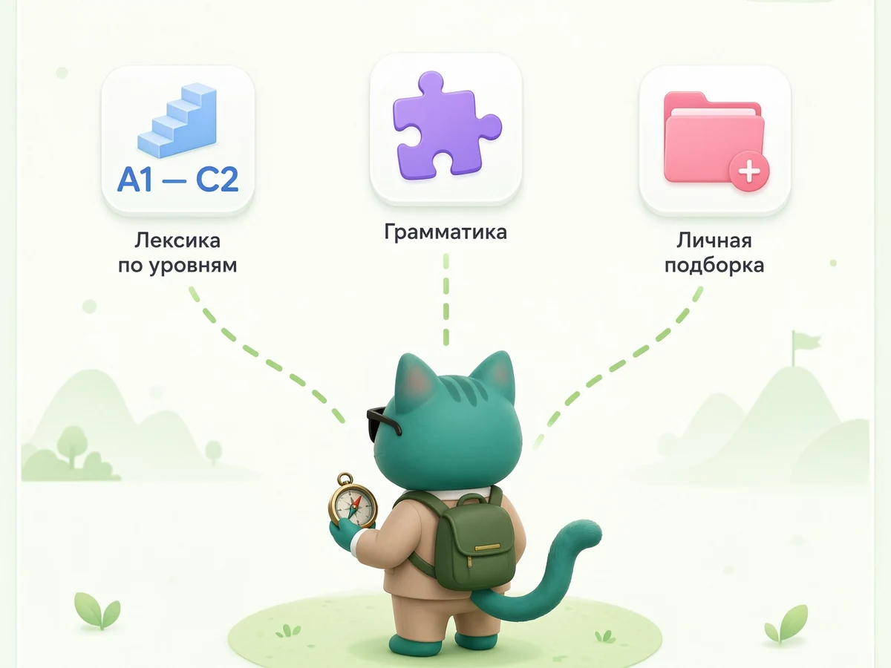
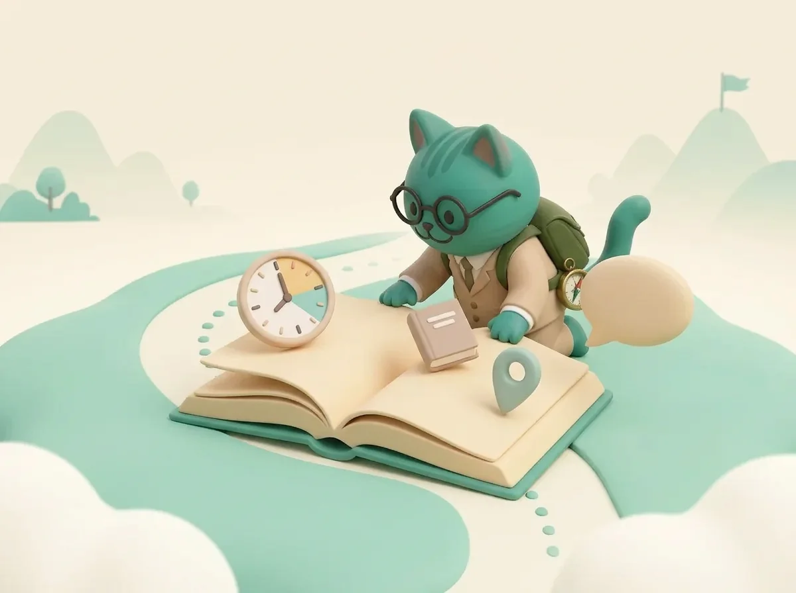
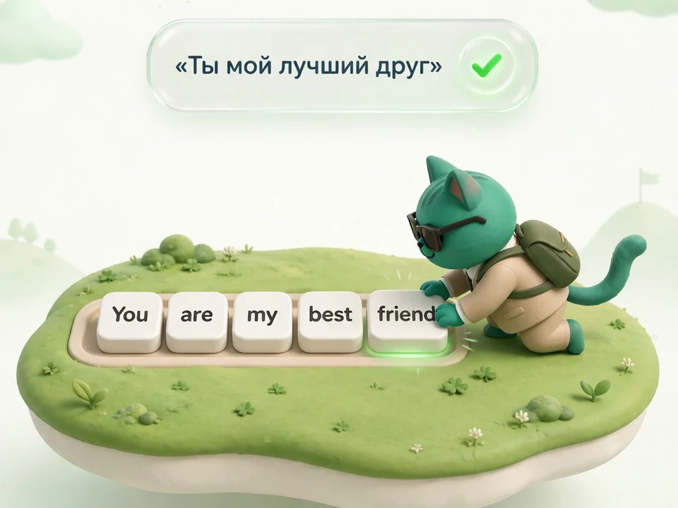

Учить английский.
Можно проще.
В журнале — короткие ответы про слова, грамматику, приложения и экзамены. Простые объяснения, примеры и таблицы. В BeWords можно учить слова по уровням и тренироваться с грамматикой.

Понять. Попробовать. Повторить.
Начни с одной темы и потренируй её на простых заданиях.
- 01Выбери темуСлова или правило.
- 02Сделай заданиеПереведи фразу или пройди упражнение.
- 03Вернись к словамПовтори то, что уже учил.


Практика английского МетодикаПлан на 1000 английских слов за месяц: сколько учить и как повторять
План на 1000 слов — это примерно 34 новых слова в день. Посмотри, как распределить занятия и повторы.
Читать → ГрамматикаВремена английского: таблица простыми словами
Короткая таблица времён и примеры: как сказать о привычке, прошлом и планах.
Читать → Грамматика15 полезных тем об английском
15 полезных тем: времена, глаголы, артикли, предлоги и слова. Это список для чтения, не рейтинг поиска.
Читать → ГрамматикаАртикли a/an и the: как выбрать простыми словами
Когда писать a/an, the или ничего? Простая схема и короткие примеры.
Читать → ЭкзаменыСколько слов учить для ЕГЭ: примерные ориентиры
Точного числа слов нет. Смотри на темы, примеры заданий и простой план подготовки.
Читать → Словарный запасСколько слов нужно знать в английском, чтобы заговорить
Числа — только ориентир. Важно узнавать слова и уметь самому использовать их в коротких фразах.
Читать → Приложения и сервисы5 приложений для английского: что выбрать для грамматики
Пять приложений: чем они помогают и как выбрать формат под свою цель.
Читать →В этой рубрике пока нет статей. Загляните в другие темы.
Читай. Применяй. Повторяй.
В BeWords есть слова по уровням A1–C2, объяснения грамматики на русском и задания на перевод предложений. Выбирай тему и занимайся в своём темпе.
Открыть BeWords ↗ Сейчас бесплатно · без карты